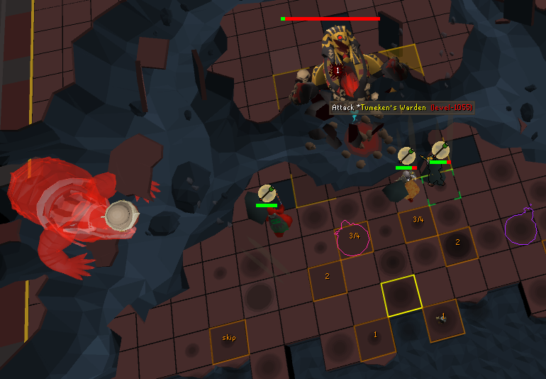
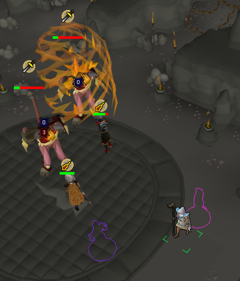

Thrall Highlighter
An official Runelite Plugin to hide and outline thralls.

Description
The Thrall Highlighter plugin is an officially approved RuneLite plugin written in Java that uses the RuneLite API to hide and outline summoned thralls in the game. This plugin is often useful for players who need that extra bit of clarity.
The thrall highlighter plugin exists as a better fork of two separate plugins that when combined and configured, could replicate the same functionality. The two plugins are Entity Hider and Better NPC Highlight.
Problems with previous solutions
There were a couple problems players had when using 'Entity Hider' and 'Better NPC Highlight' that motivated development.
Set-Up
The first major problem was that new players who wanted to hide and outline thralls, could not easily find and do so searching the plugin hub. Here are three separate Reddit threads posted by people looking for answers. This does not include other players who can sometimes be found writing similar questions elsewhere, such as in a Youtube video's comment section.
- Outline for hidden thrall - 30/03/2023
- Thrall hider and outline - 02/03/2025
- Thrall outline - 16/06/2025
Players would have to configure their entity hider plugin to hide thralls, and then find the NPC id's of the thralls they wanted to outline, and then find and paste the id's into the correct configuration setting for the NPC highlight plugin. Now, with a single install, thrall highlighter is the second thing that appears when searching for 'thrall' in the plugin hub. It uses RuneLite's .property file to show up when searching for "thrall, hide, outline, highlight, visual".

Configurability
Whilst more of a minor inconvenience than a major problem, the ability to high/outline being so tied in with the two configuration was problematic. For example, when a player wanted to players and hide thralls, they would use the entity hider plugin. However, if they wanted to unhide players but keep thralls hidden, they would have to manually go into the plugin settings, and uncheck the player option.
Likewise with the NPC highlight configs.

As fun as option-exploring is, some may describe it as a tedious activity. Especially for a menu as expertly detailed as the one above.
Development
Due to the extensive API documentation and development guidelines, development was very smooth. The plugin was created using the given official template. The extensively detailed development guide explained what guidelines to follow, how to test the plugin, and how to submit it for official approval.
The guide even detailed how to write login credentials to a file to allow testing of the plugin with the enhanced security features that come with the newer Jagex accounts.
As of now, the plugin has two new features. The first of which allows you to choose a different outline color for each type of thrall. The second feature, described as a 'fun option', allows you to randomize the outline color of the summoned thrall.
Future Ideas
The most important feature idea to be implemented is the possibility of showing the player's own thrall, but hiding other players' thralls. The problem with this at the moment is that the RuneLite API does not expose any accessibile information of who a thrall belongs to, or who summoned it, therefore the feature would require work-around solutions, such as checking targeting/movement of the thrall.

Links
Conclusion
As of writing, the plugin is comfortably sitting around ~7000 active installs. Growth was steady, but is now beginning to plateau. Older veteran players probably already have the prior two plugins configured to how they need, and don't need the plugin, so extra convenient features would be needed if I wanted to steal from that pool of players.